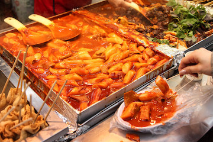
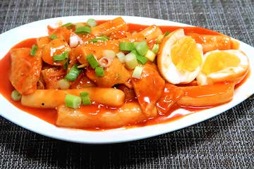

Tteokbokki Recipe
What is Tteokbokki?
It is spicy a stir-fried rice cakes dish. Is a popular Korean street food and something that can be easily made at home. There are endless variations of this dish, so this recipe is only a baseline of how I learned to make it. Most of the ingredients needed can be found at your local Asian market.
- Prep Time: 10 minutes
- Cook Time: 20 minutes
- Servings: 3
 
Ingredients Definition
- Tteok / Rice Cakes
- A class of Korean rice cakes made with steamed flour made of various grains
- Eomuk / Fish Cakes
- Processed seafood product made of ground white fish and other ingredients such as potato starch, sugar and vegetables.
- Gochujang / Korean Chili Paste
- A savory, sweet, and spicy fermented condiment made from chili powder, glutinous rice, meju powder, yeotgireum, and salt.